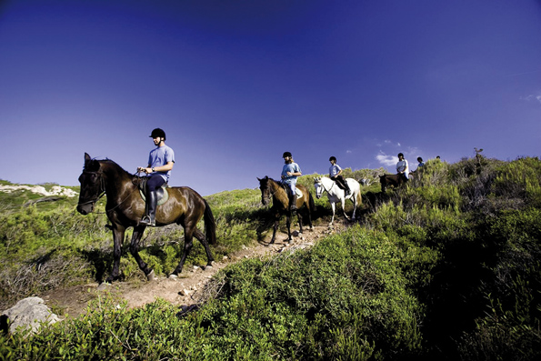
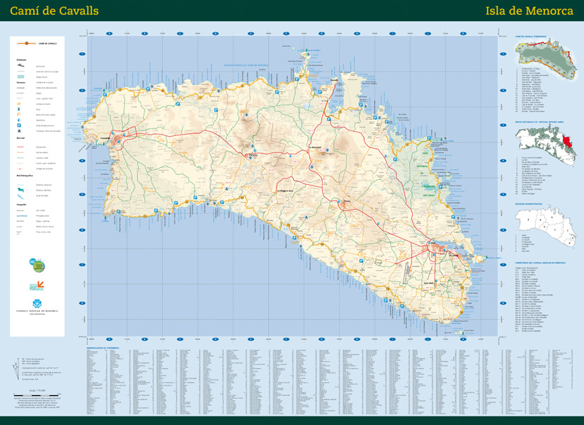
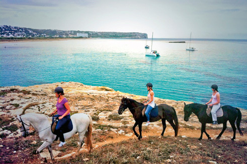

Camí de Cavalls (Cammino dei Cavalli), il miglior paesaggio
Minorca merita di essere contemplata lentamente, e vi da la possibilitá di farlo. Il Camí de Cavalls é appunto questa opportunitá. Un cammino che ha un origine che alcuni stimano nel secolo XIV, e che nel XVIII era utilizzato con fini militari unendo le torri di difesa sparse per tutta la costa. Attualmente, nel secolo XXI, questo percorso vi permette scoprire l'isola come si dovrebbe fare, senza fretta e con l'unico obiettivo di lasciarsi sedurre dalla natura.
Il Camí de Cavalls é lungo 185 kilometri, e percorre in forma circolare tutto il perimetro di Minorca. Dopo anni in disuso, i minorchini riuscirono a recuperare il sentiero, e adesso é possibile percorrerlo nella sua interezza. É necessario, farlo a piedi, in bicicletta o a cavallo. Ripetiamo, senza fretta.
Il Cammino, come l'isola, offre molti aspetti differenti, e per questo é stato diviso in 20 trami, alcuni sono adatti a tutti i tipi di persone, con percorsi semplici e comodi.
Altri richiedono una maggiore perizia e conoscenza del terreno. Per questo vi raccomandiamo che prima di intraprendere qualsiasi cammino vi informiate, e scegliate bene. L'offerta é variata, quindi esistono trami di poco piú di cinque kilometri e altri che superanoni tredici. Cammini praticamente pianeggianti, e altri con salite e discese piú pronunciate. Ci sono molte scelte.
Il Camí de Cavalls, conosciuto tecnicamente come GR233 (definizione che lo include dentro le rotte di grandi escursioni d'Europa) é segnalato in tutti i suoi cammini con cartelli di legno coronati con il simbolo di una serratura. Senza dubbio, il cammino costituisce uno dei migliori paesaggi dell'isola. Passeggiandoci, potrete scoprire le spiagge, il patrimonio archeologico, la vegetazione, la Albufera di Es Grau, le torri di difesa, la costa rocciosa, il mare... Potete perderlo?